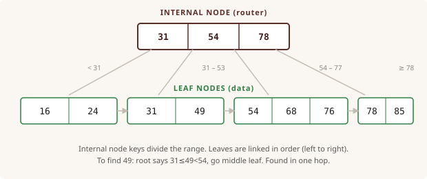
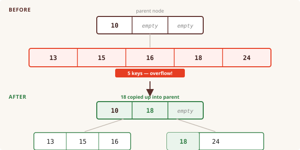
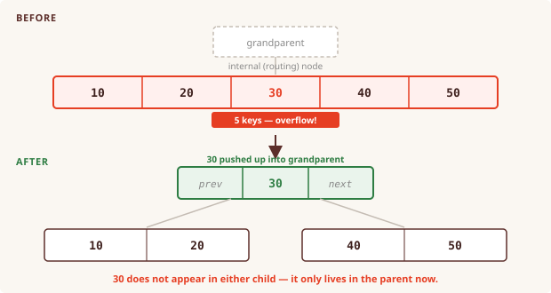

On this page ▾
1. Normal Forms
The problem: redundancy
Consider a table that stores every student alongside their department and the building that department is in:
Enrollment(student, dept, building) Alice CS Gates Bob CS Gates Carla CS Gates Dan Math Green Eve Math Green
The fact "CS is in Gates" is stored three times. If CS moves buildings, you update three rows. Miss one, and the table now disagrees with itself. This kind of redundancy is what normal forms are designed to eliminate.
The root cause is an FD between non-key columns: dept → building. The department alone determines the building, no student needed. That's a hidden dependency that doesn't belong in this table.
Functional dependencies
X → Y means: any two rows that have the same value for X must also have the same value for Y. Knowing X is enough to know Y.
The attribute closure of X, written X⁺, is the full set of attributes you can determine starting from X. Algorithm: start with X, then repeatedly add the right-hand side of any FD whose left-hand side is already in your set.
Example: FDs are AB → C, B → D, C → A
Compute (AB)⁺:
start: {A, B}
AB → C: {A, B, C}
B → D: {A, B, C, D} ← all attributes, so AB is a superkey
X is a superkey if X⁺ contains every attribute of the relation. X is a candidate key if it is a superkey and no proper subset of X is also a superkey.
BCNF
A relation is in Boyce-Codd Normal Form if, for every non-trivial FD X → Y, X is a superkey. In other words: the only columns that get to "determine" other columns are the keys.
In the Enrollment example, dept → building violates BCNF because dept is not a superkey. The fix is to decompose: pull the offending FD into its own table.
Before (BCNF violation):
Enrollment(student, dept, building)
After decomposition using dept → building:
Enrollment(student, dept) ← R minus {building}
DeptBuilding(dept, building) ← just the FD
Now each fact lives in exactly one place. The general recipe is:
- Find any FD
X → Ywhere X is not a superkey. - Replace R with
R - Y(all attributes except Y) andXY(just X and Y). - Repeat on each new relation until no violations remain.
Lossless joins
A decomposition is lossless if you can reconstruct the original table by joining the pieces. A two-way split R → R1, R2 is guaranteed lossless when the shared columns R1 ∩ R2 form a key of R1 or R2. This is always true when you decompose using a violating FD: the shared column is the left-hand side of the FD, which is a key of the smaller table.
Exercise: decompose R into BCNF
Given the relation R = (A, B, C, D) and the FDs:
AB → C
B → D
C → ADecompose R into BCNF.
Step 1. Find the candidate keys
Try subsets of attributes. Compute each closure. A subset is a candidate key if its closure is all of ABCD and no smaller subset also reaches ABCD.
What is (AB)⁺? Is AB a candidate key? What about BC?
Show answer
Start with {A, B}. Apply AB → C, add C. Apply B → D, add D. (AB)⁺ = ABCD. AB is a superkey.
Is it minimal? A⁺ = A, B⁺ = BD. Neither singleton reaches all four attributes, so no proper subset of AB is a superkey. AB is a candidate key.
Try BC: start with {B, C}. B → D adds D. C → A adds A. (BC)⁺ = ABCD. B alone gives BD, C alone gives AC, neither is a superkey. BC is also a candidate key.
Step 2. Find a BCNF violation
For each FD, ask whether the left-hand side is a superkey.
Which of the three FDs violate BCNF?
Show answer
AB → C: AB is a candidate key. No violation.B → D:B⁺ = BD, not a superkey. Violates BCNF.C → A:C⁺ = AC, not a superkey. Violates BCNF.
Two violations. Pick one to decompose on first.
Step 3. First decomposition
Use the violation B → D. Split R into R - {D} and BD.
Write the two new relations and the FDs on each. Which one is already in BCNF?
Show answer
R1 = (A, B, C) with FDs AB → C and C → A.
R2 = (B, D) with FD B → D. B is the key of R2, so R2 is already in BCNF.
R1 still has C → A where C is not a superkey of R1. Not done yet.
Step 4. Second decomposition
Now decompose R1 using C → A.
Split R1. Write the final set of relations.
Show answer
R1 = (A, B, C) splits into R1a = (B, C) and R1b = (A, C).
Final BCNF decomposition: (A, C), (B, C), (B, D).
In each relation, every non-trivial FD has a superkey on the left. Done.
Step 5. Check lossless
For each split, confirm that the shared columns form a key of one of the two pieces.
Check both splits.
Show answer
Split 1: R → (A,B,C) and (B,D). Shared: {B}. B is the key of (B,D). Lossless.
Split 2: (A,B,C) → (A,C) and (B,C). Shared: {C}. C determines A, so C is the key of (A,C). Lossless.
If you decomposed using C → A first, you get different relations. Both decompositions are correct.
2. B+ Trees
Why a tree index exists
A database table can have millions of rows. Scanning every row to answer a query is too slow. A B+ tree is an index: a separate structure that lets you jump straight to the rows you need.
The tree is organized so that at each level you make a routing decision ("go left, middle, or right?") and by the time you reach the bottom you're exactly at the right data. Every level you visit is one disk read, and the tree stays short enough that you only need two or three disk reads for any query.
Structure
A B+ tree has two kinds of nodes. Internal nodes are routers: they hold keys that act as dividers, telling you which child to follow. Leaf nodes hold the actual data keys (and in a real database, pointers to the rows). Leaves are also linked left-to-right so range scans are fast.

To search for 49: the root key 31 ≤ 49 < 54, so follow the middle pointer. The leaf [31 | 49] contains 49. Done in two disk reads regardless of how many rows the table has.
The order constraint
Every node except the root must hold between d and 2d keys, where d is the tree's order. This keeps the tree balanced: no node is ever empty, and no node ever overflows. In this lab, d = 2, so each non-root node holds between 2 and 4 keys.
Inserting a key
Find the right leaf (follow the routing keys from root to leaf), then insert the key in sorted order. If the leaf now holds 2d+1 = 5 keys, it overflows and must split.
Leaf split: copy up
When a leaf overflows, split it in half. The first key of the right half is copied into the parent as a new routing key. It stays in the leaf too, because leaves must hold every actual data key.

Internal node split: push up
If a routing key propagates up to an internal node that is already full, that node splits too. The middle key is pushed up to the parent and does not remain in either child. This is the key difference from a leaf split.

If the root itself splits, a brand-new root is created one level above it and the tree grows taller.
Exercise: build the tree
Insert these 16 keys into an empty B+ tree in the given order. Order d = 2, so each node holds at most 4 keys.
49, 24, 54, 31, 16, 76, 85, 68, 15, 40, 13, 35, 67, 18, 17, 29The first four inserts fill a single leaf with no split needed:
After 49, 24, 54, 31: [ 24 | 31 | 49 | 54 ]
Step 1. Insert 16
The leaf is full. Adding 16 makes 5 keys, so the leaf splits.
Split the leaf and copy the right half's smallest key up to a new root. Draw the tree.
Show answer
After 16:
[ 31 ]
/ \
[ 16 | 24 ] [ 31 | 49 | 54 ]
31 is copied up (it still sits in the right leaf).
Step 2. Insert 76, 85, 68
76 fits in the right leaf. 85 overflows it, triggering another leaf split. 68 then lands in the correct leaf.
Draw the tree after each of 76, 85, 68.
Show answer
After 76:
[ 31 ]
/ \
[ 16 | 24 ] [ 31 | 49 | 54 | 76 ]
After 85: right leaf overflows, split. Right half starts at 54, copy 54 up.
[ 31 | 54 ]
/ | \
[16|24] [31|49] [54|76|85]
After 68: 68 belongs in [31|49] (between 31 and 54).
[ 31 | 54 ]
/ | \
[16|24] [31|49|68] [54|76|85]
Step 3. Insert 15, 40
15 goes in the leftmost leaf. 40 fills the middle leaf. No splits yet.
Draw the tree after 15 and 40.
Show answer
After 15, 40:
[ 31 | 54 ]
/ | \
[15|16|24] [31|40|49|68] [54|76|85]
No splits. Middle leaf is now full (4 keys).
Step 4. Insert 13, 35
13 fills the leftmost leaf. 35 makes the middle leaf overflow.
Insert 13, then 35. Split where needed and draw the result.
Show answer
After 13:
[ 31 | 54 ]
/ | \
[13|15|16|24] [31|40|49|68] [54|76|85]
After 35: middle leaf becomes [31|35|40|49|68], overflows.
Right half starts at 40, copy 40 up to the root.
[ 31 | 40 | 54 ]
/ | | \
[13|15|16|24] [31|35] [40|49|68] [54|76|85]
Root now holds 3 keys, room for one more.
Step 5. Insert 67, 18
67 fills the third leaf. 18 overflows the leftmost leaf and its split key propagates up to the root.
Insert 67, then 18. Walk through the leaf split and show the new root.
Show answer
After 67:
[ 31 | 40 | 54 ]
/ | | \
[13|15|16|24] [31|35] [40|49|67|68] [54|76|85]
After 18: leftmost leaf [13|15|16|18|24] overflows.
Right half starts at 18, copy 18 up. Root becomes [18|31|40|54], still 4 keys, OK.
[ 18 | 31 | 40 | 54 ]
/ | | | \
[13|15|16] [18|24] [31|35] [40|49|67|68] [54|76|85]
Root is now full. The next key that propagates up here will split the root.
Step 6. Insert 17, 29
17 goes in [13|15|16], filling it. 29 goes in [18|24], no overflow.
Insert 17 and 29. Does anything split?
Show answer
After 17:
[ 18 | 31 | 40 | 54 ]
/ | | | \
[13|15|16|17] [18|24] [31|35] [40|49|67|68] [54|76|85]
After 29: 29 goes into [18|24], becomes [18|24|29]. No overflow.
Final tree:
[ 18 | 31 | 40 | 54 ]
/ | | | \
[13|15|16|17] [18|24|29] [31|35] [40|49|67|68] [54|76|85]
All 16 keys placed. Height 2 (root plus one leaf level).
If your tree differs but every non-root node has 2 to 4 keys and the order is correct, you almost certainly got it right.
Common mistakes
"I got a different candidate key"
Probably fine. Compute the closure of your key: if it reaches all attributes and no proper subset does the same, it's a valid candidate key. The relation in the exercise has two: AB and BC.
"My decomposition gives different relations than the reveal"
Also probably fine. Choosing a different violating FD first leads to a different but equally valid BCNF decomposition. The check is: in each of your final relations, does every non-trivial FD have a superkey on the left?
"My decomposition is not dependency preserving"
BCNF decompositions are always lossless but not always dependency preserving. That's a known trade-off. If you need dependency preservation, 3NF is the alternative (it keeps all FDs but allows some redundancy).
"I mixed up copy-up and push-up"
Leaf split: the dividing key is copied up. It still lives in the right leaf because leaves must hold every actual key. Internal node split: the middle key is pushed up. It leaves the node and only exists in the parent after the split.
"My tree is taller than the reveal"
Probably fine, as long as every non-root node has 2 to 4 keys and the sort order is correct. Borderline cases can go either way depending on how you split.
"I split a leaf 1 and 4 instead of 2 and 3"
A 5-key overflow should split into 2 keys and 3 keys (or 3 and 2). Splitting into 1 and 4 leaves the smaller piece below the minimum d = 2, which is not allowed.